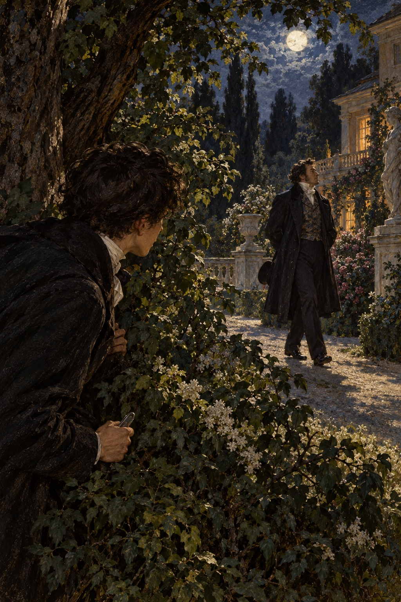
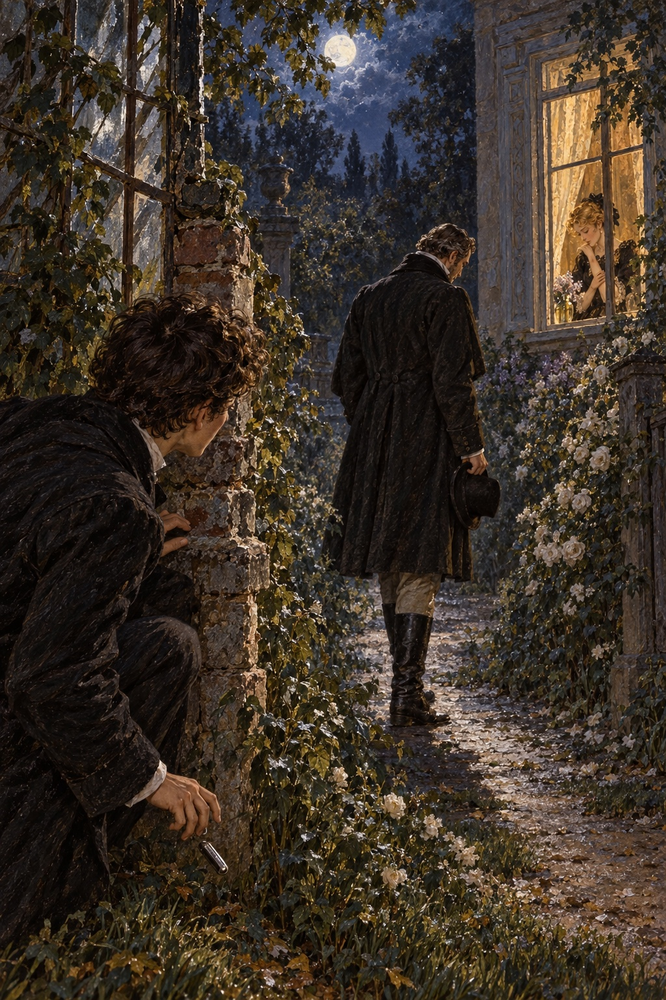

Ivan Turgenev · First Love
제17장
다음 날 지나이다는
스치듯 한 번밖에 못 봤다.
공작부인과 함께
삯마차를 타고 어딘가로 갔다.
대신 루신을 만났다.
그는 인사만 겨우 받아 주었다.
말렙스키도 만났다.
젊은 백작은 이를 드러내며 웃고
친근하게 말을 걸었다.
별채 손님 가운데
우리 집에 드나들 만큼
친해진 사람은 그뿐이었다.
어머니도 그를 마음에 들어 했다.
아버지는 싫어했다.
너무 공손해서
오히려 모욕이 되는 말투로
그를 대했다.
“아, 시종님!”
말렙스키가 말했다.
“만나서 반갑습니다.
아름다운 여왕님은
무엇을 하고 계십니까?”
그날 그의 깨끗하고
잘생긴 얼굴이
얼마나 역겨웠는지 모른다.
나를 보는 눈길도
경멸 섞인 장난기로 가득했다.
나는 아무 말도 하지 않았다.
“아직도 화가 나셨나요?”
그가 말을 이었다.
“그럴 필요 없어요.
시종이라 부른 사람은
내가 아니잖습니까.
게다가 시종은
여왕을 섬기는 법이지요.
다만 한 가지,
맡은 일을 제대로 안 하시더군요.”
“무슨 뜻입니까?”
“시종이라면
주인 곁을 떠나지 않고
주인이 무엇을 하는지
모두 알아야 합니다.
지켜보기도 해야지요.”
그는 목소리를 낮췄다.
“낮에도,
밤에도요.”
“무슨 말씀을 하시는 거죠?”
“분명히 말씀드렸잖습니까.
낮에는 그래도 괜찮지요.
밝고 사람도 많으니까요.
하지만 밤에는
무슨 일이 생길지 모릅니다.
잠들지 말고
눈을 크게 뜨고 지켜보세요.
밤에 정원 분수 곁을
살펴야 합니다.
나중에 내게 고마워할 겁니다.”
말렙스키는 웃고
등을 돌렸다.
아마 자기가 한 말을
대수롭지 않게 여겼을 것이다.
그는 장난으로 사람을 속이는 데
솜씨가 뛰어나다고 알려져 있었다.
가면무도회에서 사람들을
감쪽같이 놀리는 걸로도 유명했다.
타고난 듯한 거짓말 기질이
그 솜씨를 도왔다.
그저 나를 놀리려던 것이었다.
하지만 말 한마디 한마디가
독처럼 내 혈관에 흘렀다.
피가 머리로 솟구쳤다.
‘아, 그런 거였어.
어젯밤 예감이 맞았구나.
괜히 정원으로
끌린 게 아니었어.
절대 그렇게 두지 않겠어!’
나는 크게 외치며
가슴을 주먹으로 쳤다.
정작 무엇을 막겠다는 건지는
나도 몰랐다.
‘말렙스키가 직접 오든,
다른 사람이 오든
내 손에 걸리면
무사하지 못해.’
우리 집 정원 울타리는 낮아
누구든 쉽게 넘을 수 있었다.
백작이 무심코
자기 일을 털어놓았을지도 몰랐다.
그럴 만큼 뻔뻔한 자였다.
‘나를 만나는 건
누구에게도 권하지 않겠어.
세상 모두와 그녀에게,
그 배신자에게
내가 복수할 줄 안다는 걸
보여 주겠어.’
나는 지나이다를
정말 ‘배신자’라고 불렀다.
방으로 돌아와
책상 서랍을 열었다.
최근에 산 영국제 접이칼을 꺼냈다.
날끝을 만져 보았다.
눈썹을 찌푸리고
차갑게 마음을 다잡은 채
주머니에 넣었다.
이런 일이 처음도 아닌 사람처럼.
마음속에서는
악의가 솟구쳐 굳어졌다.
밤이 될 때까지
눈살도 풀지 않았고
입술도 벌리지 않았다.
이따금 방을 오가며
주머니 속 따뜻해진 칼을
손으로 움켜쥐었다.
무서운 일을 미리 준비했다.
처음 겪는 이 감정은
나를 온통 차지했고
심지어 들뜨게 했다.
그래서 지나이다 자신은
별로 생각하지 않았다.
푸시킨의 시에 나오는
젊은 집시 알레코가
계속 떠올랐다.
“어디 가나,
젊고 잘생긴 사람?
가만히 누워….”
그리고 이런 말도.
“온몸에 피가 튀었구나!
무슨 짓을 한 거야?”
“아무것도.”
나는 ‘아무것도’라는 말을
잔인하게 웃으며
되풀이했다.
아버지는 집에 없었다.
한동안 거의 늘
속으로 화를 삼키고 있던
어머니는
내 비장한 표정을 알아보았다.
“왜 그렇게
심통이 나 있니?”
저녁 식사 때 물었다.
나는 너그러운 척
웃어 보였다.
‘이들이 알기나 한다면!’
열한 시를 알리는
종소리가 났다.
나는 방으로 갔지만
옷을 벗지 않았다.
자정을 기다렸다.
마침내 자정이 되었다.
“때가 됐어.”
이를 악문 채 속삭였다.
웃옷 단추를 목 끝까지 채우고
소매까지 걷은 뒤
정원으로 나갔다.
어디에 숨어 지켜볼지는
미리 정했다.
정원 끝에는
우리 집과 자세킨네 땅을
가르는 울타리가
공통 담장에 닿았다.
그곳에 가문비나무 한 그루가
홀로 서 있었다.
낮고 빽빽한 가지 아래 서면
밤의 어둠이 허락하는 만큼
주위를 잘 볼 수 있었다.
옆에는 오래전부터
수상해 보이던 길이 있었다.
누군가 넘나든 흔적이 있는
울타리 밑을 뱀처럼 지나
아카시아가 빽빽한
둥근 정자로 이어졌다.
나는 가문비나무에 이르러
줄기에 몸을 기대고
기다리기 시작했다.
전날처럼 고요한 밤이었다.
하지만 구름은 더 적었다.
덤불과 키 큰 꽃의 윤곽이
전보다 선명했다.
처음 기다리는 몇 순간은
괴롭고 거의 무서웠다.
무엇이든 하겠다고
마음먹은 상태였다.
다만 어떻게 할지를 생각했다.
‘어디 가는 거냐?
멈춰!
사실대로 말해!
아니면 죽어!’
이렇게 외칠까?
아니면 말없이
덮칠까?
소리와 바스락거림 하나하나가
모두 뜻깊고
이상하게 들렸다.
나는 몸을 앞으로 기울여
준비했다.
하지만 삼십 분이 지나고
한 시간이 지났다.
뜨거웠던 피가 가라앉고
차가워졌다.
‘괜한 짓을 하는 건가?
우스워 보이겠지.
말렙스키가 나를 놀린 거야.’
그런 생각이 마음에 스며들었다.
숨어 있던 자리를 떠나
정원을 한 바퀴 돌았다.
일부러 그러는 것처럼
어디에도 작은 소리 하나 없었다.
모든 것이 쉬고 있었다.
우리 집 개까지
쪽문 옆에서
몸을 둥글게 말고 잠들었다.
무너진 온실 벽에 올라
먼 들판을 바라보았다.
지나이다와 만났던 일을 떠올리고
생각에 잠겼다.
그때 움찔했다.
문이 삐걱 열리고
작은 가지가 부러지는 소리가
들린 것 같았다.
두 번 뛰어
벽에서 내려왔다.
그 자리에 얼어붙었다.
빠르고 가벼우면서도
조심스러운 발소리가
정원에서 분명히 들렸다.
내 쪽으로 오고 있었다.
‘드디어 왔다.’
나는 경련하듯
주머니에서 칼을 꺼내
펼쳤다.
눈앞에 붉은 불꽃이
빙빙 돌았다.
두려움과 분노 때문에
머리카락이 곤두섰다.

발소리는 바로
내 쪽으로 다가왔다.
나는 몸을 낮추고
그를 기다렸다.
사람 모습이 나타났다.
하느님!
아버지였다.

짙은 망토에
몸을 감싸고
모자를 얼굴 위로
깊숙이 눌러썼지만
나는 바로 알아보았다.
아버지는 발끝으로
내 곁을 지나갔다.
나를 보지 못했다.
나를 가려 줄 것은
아무것도 없었다.
하지만 몸을 너무 낮게
구부린 탓에
땅과 높이가
거의 같아졌을 것이다.
질투에 눈이 멀어
살인까지 각오한 오셀로는
한순간에
학교 다니는 소년이 되었다.
아버지가 뜻밖에 나타나
너무 놀란 나머지
그가 어디서 와서
어디로 사라졌는지도
처음에는 보지 못했다.
주위가 다시 조용해지고 나서야
몸을 폈다.
‘아버지는 왜
밤중에 정원을 걷지?’
겁에 질려
칼을 풀밭에 떨어뜨렸지만
찾을 생각도 하지 않았다.
몹시 부끄러웠다.
한순간에 정신이 들었다.
집으로 돌아가다가
딱총나무 아래 내 의자에
다가갔다.
지나이다의 침실 창문을
바라보았다.
작고 조금 불룩한 유리창이
밤하늘의 약한 빛을 받아
희미하게 파랬다.
그런데 갑자기
유리의 색이 달라졌다.
창 안쪽에서
흰 커튼이
아주 조심스럽게
천천히 내려왔다.
나는 분명히 보았다.
커튼은 창틀까지 내려와
움직이지 않았다.
“이게 무슨 일이지?”
방으로 돌아왔을 때
나도 모르게
소리 내어 물었다.
“꿈이었나?
우연이었나?
아니면….”
갑자기 떠오른 생각들은
너무 새롭고 이상했다.
차마 끝까지
생각할 수도 없었다.